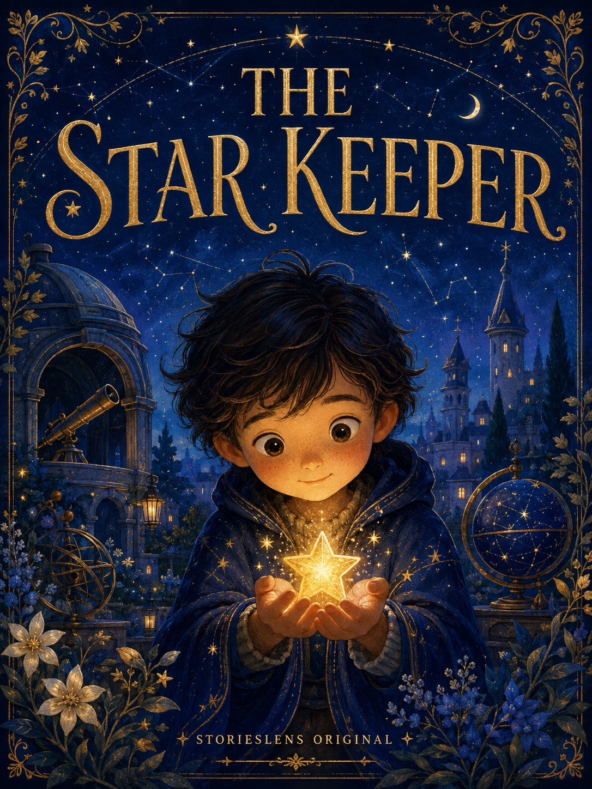
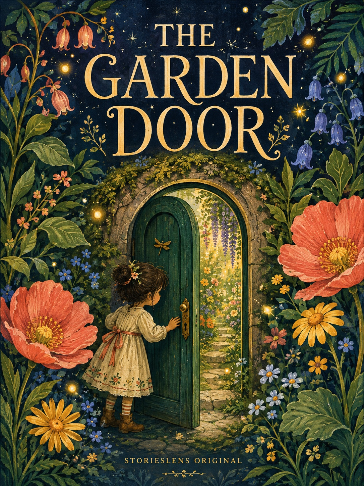

STORIESLENS ORIGINALS · 语镜原创示例
Stories made
to be kept.
One drawing, photo, voice, or piece of writing can grow into a book or a film—in English or Chinese.
These are product examples. Family and classroom work stays private unless its creator chooses to publish it.



 FILM CONCEPT
FILM CONCEPT
 电影概念片
电影概念片
 FILM CONCEPT
FILM CONCEPT
 电影概念片
电影概念片
YOUR STORY CAN BE NEXT · 下一个可以是你的故事